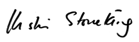

Friends,
For nearly 25 years, thousands of human rights activists have gathered every November for a vigil at the main gate of the Western Hemisphere Institute for Security Cooperation, formerly known as the US Army School of the Americas -- SOA -- located at Fort Benning near Columbus, Georgia.
This year, on the 25th anniversary of the gathering organized by SOA Watch, the Columbus police department is trying to outlaw the peaceful protest.
In a letter to grassroots solidarity group SOA Watch, Columbus Police Chief Ricky Boren demanded that organizers limit the number of people to 200, congregate entirely on a sidewalk five feet from the street, and refrain from using a stage that has lifted up the voices of those targeted by the infamous military training school.
This is a demonstration that regularly involves thousands of people, including many communities of faith, and is built around making the invisible oppression of this military training base more visible.
Limiting and hiding protesters from Fort Benning military and community members will fundamentally undermine the event.
Join FOR and SOA Watch in defending our right to peaceable assembly and free speech!
This is a critical moment in the history of this event, throwing light and accountability on U.S. support for actions and regimes that the military would prefer to keep hidden.
Sign a letter to the Columbus police chief from SOA Watch calling for the restoration of our constitutional rights.
Even more importantly, we encourage you to write a physical letter to the Columbus mayor and police chief about your concerns, which will have a greater impact than emails.
Read on for the history of SOA Watch, why we think this moment is so important, and a sample letter.
A watchdog for human rights
The vigil at the gates of Fort Benning began in 1990, when a small group organized by Father Roy Bourgeois honored the lives of 16-year-old Celina Ramos, her mother Elba Ramos, and six Jesuit priests on the anniversary of their deaths at the hands of SOA graduates in a massacre at the University of Central America in El Salvador.
SOA Watch was born on that day and is now a large, diverse, grassroots movement dedicated to closing the institute which perpetuates coups, torture, extrajudicial killings, and human rights abuses in the face of social and political problems.
Among graduates of this institution are at least 11 dictators, as well as leaders of infamous Central American death squads. Graduates are linked to the Honduran military coup and the repression campaign against social movements there, among other humanitarian crises.
"This year, more than any other, we are called to demonstrate our solidarity with the people of Latin America, 25 years after SOA graduates committed the brutal massacre at the University of Central America," said veteran and founder Father Roy Bourgeois.
"When our military training continues to target communities, forcing the unaccompanied migration of thousands of refugee children, we must speak out. It is no surprise that when the stakes are this high, our movement is faced with political attacks on our constitutional rights," Bourgeois said.
FOR staff and members, especially those involved with the Peace Community of San José de Apartadó, Colombia, have participated in the SOA Watch vigil for many years.
In a report from the vigil in November 2007 by former FOR executive director Mark Johnson, he describes the magnitude of the gathering:
"An estimated 20,000 to 25,000 individuals carry small white crosses in a procession that spreads from the gate into Ft. Benning back to the public access road and forward again, five persons wide to accommodate hundreds of banners representing various groups here in large numbers.
"As I enter from the public road, the police are confiscating crosses which don't strictly meet the 18" maximum for the vertical strut. These are later collected and displayed at the head of the road, just as thousands and thousands are inserted in the chain link fence at the gate to the Fort.
"Each cross bears the name of a victim of violence in Latin America, derivative or directly related to training presented at the School of Americas (or 35 other U.S. bases where Latin American military leaders are trained). As the procession circulates in front of the main program platform, the names of the dead are intoned and the entire procession responds 'Presente.' Particularly powerful is the recitation, 'unknown child, Choco' repeated perhaps a hundred times to represent a massacre of more than 130 persons."
Send a letter to the Columbus authorities
The Fellowship of Reconciliation feels strongly about our community being able to exercise our First Amendment rights at the sacred site where the SOA Watch vigil originated and has been convened for nearly 25 years.
We encourage you to sign the online letter from SOA Watch to Columbus Police Chief Ricky Boren, but we also know that emails don't have the impact of a personal letter in the mail.
FOR Executive Director Rev. Kristin Stoneking wrote the attached letter to Columbus Mayor Teresa Tomlinson and Police Chief Boren. We encourage you to send a copy of our letter if you like -- or for even more impact, write a letter in your own words.
Let's flood their offices with letters and raise our voices! Let's speak out together for SOA Watch and for our First Amendment rights!
Send your letters to:
Mayor Teresa Tomlinson
6th Floor, Government Center Tower
100 10th St.
Columbus GA 31901
Chief Ricky Boren
Columbus Police Department
510 10th St.
Columbus GA 31901
In peace and justice,
Kristin, Linda, Ethan, and the rest of the FOR staff
FOR's letter to Mayor Tomlinson and Chief Boren
Dear Chief Boren,
Amendment I to the Constitution of the United States:
Congress shall make no law respecting an establishment of religion, or prohibiting the free exercise thereof; or abridging the freedom of speech, or of the press; or the right of the people peaceably to assemble, and to petition the government for a redress of grievances.
For the past 25 years, thousands of people have been gathering annually at the gates of Fort Benning to work to make our world a more peaceful and just place for all. The entrance to The Western Hemisphere Institute for Security Cooperation (WHINSEC), formerly known as the US Army School of the Americas (SOA), is the site for a November Vigil that commemorates those who have been killed by SOA/WHINSEC graduates, and calls for the closure of the institute which perpetuates coups, torture, extrajudicial killings, and human rights abuses in the face of social and political problems. Organized by SOA Watch, the vigil is a peaceful assembly at which we, the people, exercise our right to free speech.
It has come to our attention that SOA Watch has been denied the right to set up a stage and speakers so the messages from survivors of ongoing SOA-graduate violence in Colombia and Honduras can share their stories, and that the Columbus Police Department is restricting the number of vigil attendees to no more than 200 protesters at a time.
We are gravely concerned about the denial of our constitutional rights as citizens to assemble outside of Fort Benning this year, and we are calling on the Columbus police department to reverse its decision and to uphold the constitutional rights to free speech and freedom of assembly. We have responsibilities and freedoms under our constitution to peacefully assemble and to speak truth to power. We are committed to these principles and trust that, as agents of the law, you are committed to uphold the rights written in the United States Constitution.
We hope and pray to be ensured of a safe and legal gathering space for all who wish to attend the vigil.
In Peace,

Rev. Kristin Stoneking
Executive Director
Fellowship of Reconciliation |